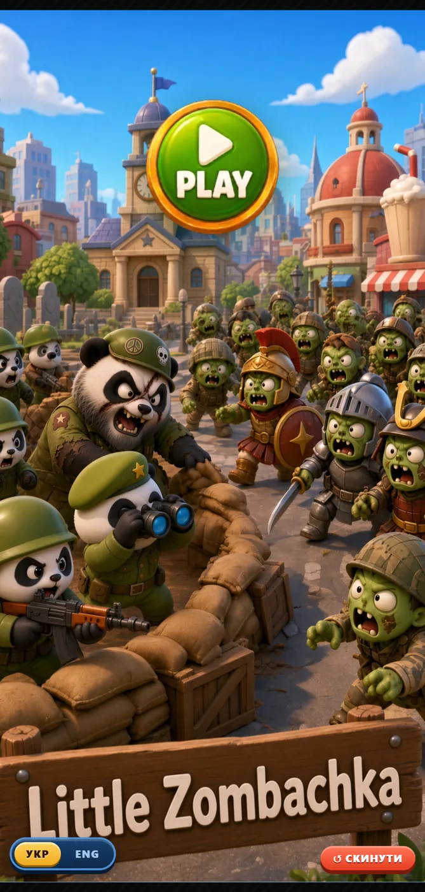

WarMatch
Base builder + match-3A zombie-apocalypse base builder wrapped around a match-3 mini-game, where the matched pallets are the ammunition and supply that keep your camp alive. Panda soldiers hold the line, a squad of cheerfully awful sergeants narrate it, and the two layers are tuned so that a good match-3 run is immediately visible on the base screen. Fully playable in the browser with a Ukrainian and English interface.